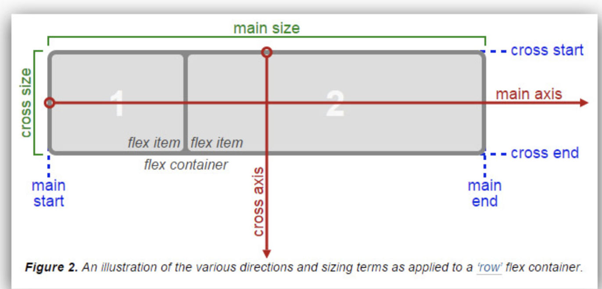

Flex
簡介
是一種 css 針對頁面排版的一種方法 ，
分為外部容器(container) & 內部元件(items) 兩方面的設定
外部容器 Container
外部容器負責的是內部元件的排列方式以及方向 ，
根據 flex 模型圖來看會有幾個參考點

分兩大類別：
- main axis
根據 flex 方向來決定 - cross axis
跟main axis為垂直的軸
每個類別包含有：
- start
此軸的啟始 - end
此軸的結束 - size
此軸的長度
相關設定：
- flex-direction
設定 item 排列方向，並決定好上述的參考點，分別為：- row
橫向排列，以左至右 - column
縱向排列，以上至下 - row-reverse
橫向排列，以右至左 - column-reverse
縱向排列，以下至上
- row
- flex-wrap
設定內容物件是否需要換行，其相關設定為：- nowarp
預設，單行顯示 - wrap
總長度超出設定寬度就換行 - wrap-reverse
反轉排序
- nowarp
- justify-content
以main axis為基準來對齊，分別為：- flex-start
以main start對齊 - flex-end
以main end對齊 - center
以main axis中間 對齊 - space-between
平均分配main size空間， 第一個 ＆ 最後一個 item 對齊 start & end - space-around
平均分配main size空間
- flex-start
- align-items
是以單行為單位處理，以cross axis為基準來對齊，分別為：- flex-start
以cross start對齊 - flex-end
以cross end對齊 - center
以cross axis中間 對齊 - stretch
如 item 尚未設定長度，強制拉伸 item 至cross size同等長度 - baseline
以 item 的 baseline 為基準做對齊
- flex-start
- align-content
是根據全部內容處理，以cross axis為基準來對齊，分別為：- flex-start
以cross start對齊 - flex-end
以cross end對齊 - center
以cross axis中間 對齊 - stretch
如 item 尚未設定長度，強制拉伸 item 至cross size同等長度 - baseline
以 item 的 baseline 為基準做對齊 - space-between
平均分配cross size空間， 第一個 ＆ 最後一個 item 對齊 start & end - space-around
平均分配cross size空間
- flex-start
align-content vs align-items
內部元件 Items
針對元件本身內部空間相關的設定
相關設定：
- flex : [grow] [shrink] [basis]
- flex-grow
在外部容器尚有空間時，依據數值擴展元件大小，0 為不啟用，皆以整數設定 - flex-shrink
在外部容器空間不夠時，依據數值縮減元件大小，0 為不啟用，皆以整數設定 - flex-basis
此元件基礎長度，可套用不同單位(px、%、em …etc)
- flex-grow
- order
調整元件順序，數字越小越靠前 - algin-self
單獨對元件設定，跟align-items一樣的設定